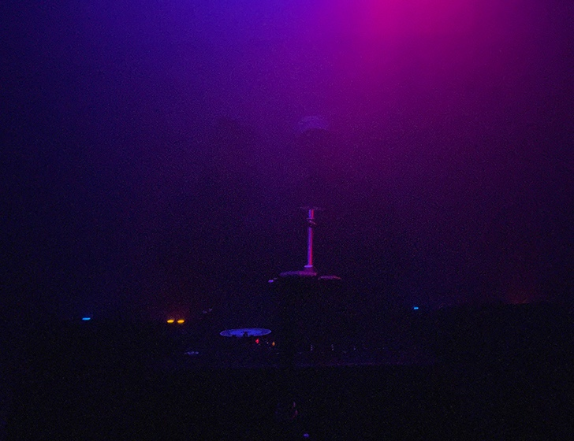
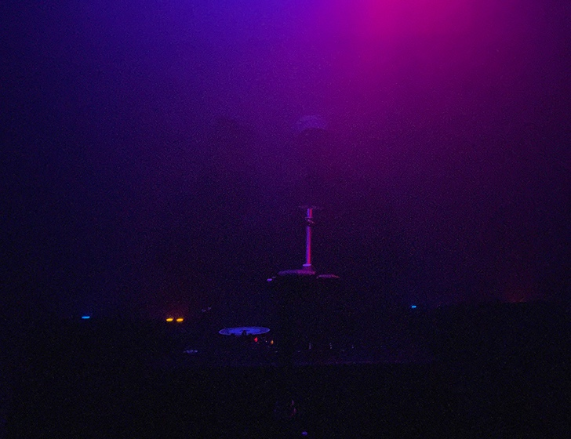

Introduction
I believe my practice exists as the intersection of my personal interests. It’s an extension and combination of my passions outside of ‘Graphic Design’ itself that influence how I perceive the world around me and how I design for it. My practice is heavily contextualised however not just from graphic-practitioners but from a wide range of sources across disciplines (I almost find it more common that my inspirations are external to design). Therefore, this essay will talk not only about Graphic Design, but about music and soundscapes, technologies and systems and even pubs and bars. Research, process and experiments from my Unit 6 work will be used to support throughout.
Image: photograph taken of me and my Friend after playing at an event we ran at 'Spanners', a small community-focused club venue in South London.